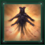
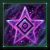
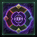
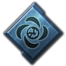
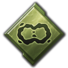

The Shroud
The Shroud is an immaterial realm of pure psionic energy outside of the physical universe. All sentient species are linked in some way to the Shroud, however only those who complete psionic ascension will be able to interact with it. There are 4 major patrons within the Shroud that empires may interact with, as well as other powerful beings. An empire can delve into the Shroud every 5 years, or every 2.5 years if it has the  Psionic Archive relic. The
Psionic Archive relic. The  End of the Cycle cannot appear if an empire with the
End of the Cycle cannot appear if an empire with the  Knights of the Toxic God achieved the
Knights of the Toxic God achieved the  Cosmogenesis victory via the special project.
Cosmogenesis victory via the special project.
The mechanics of the Shroud depends on whether the  Shadows of the Shroud DLC is present or not.
Shadows of the Shroud DLC is present or not.
Base game mechanics
Accessing the Shroud requires taking the  Breach the Shroud tradition and finishing the special project it unlocks. The special project requires 500+(pops)
Breach the Shroud tradition and finishing the special project it unlocks. The special project requires 500+(pops)  Society Research. Upon completion, the Shroud will be added to the Contacts menu from where it can be entered to interact with it. Entering the Shroud requires 1000
Society Research. Upon completion, the Shroud will be added to the Contacts menu from where it can be entered to interact with it. Entering the Shroud requires 1000  Energy. Entering the Shroud for the first time will award the
Energy. Entering the Shroud for the first time will award the
There are 5 incomprehensibly powerful beings from the Shroud that may take notice of an empire entering the shroud and offer to form a Covenant. Only one Covenant can be formed by each empire. There are 3 ways to gain a patron's attention:
- The first time an empire enters the Shroud, it will have the option to accept a special project called Commune with the Ineffable. The special project requires 500+(pops)
 Society Research. The patron is chosen based on its preferences.
Society Research. The patron is chosen based on its preferences. - When attempting to enter the Shroud, the empire will be given the option to pay 2000
 Energy and 500
Energy and 500  Zro. The patron can be chosen, except for the End of the Cycle.
Zro. The patron can be chosen, except for the End of the Cycle. - The option to form a Covenant may randomly appear as part of Shroud visions. The patron is chosen based on its preferences.
One year after both a Covenant was formed and the  Psionics tradition tree is finished, the empire will be asked to confirm or renounce the Covenant. Confirming will allow the Covenant to grant new effects once enough Attunement has been obtained. Attunement is obtained at a rate of 0.03 each month, affected by patron preferences.
Psionics tradition tree is finished, the empire will be asked to confirm or renounce the Covenant. Confirming will allow the Covenant to grant new effects once enough Attunement has been obtained. Attunement is obtained at a rate of 0.03 each month, affected by patron preferences.
| Patron | Starting bonus | 20 Attunement (replaces starting telepath bonus) | 50 Attunement (replaces starting bonus) | 90 Attunement (choose a leader to replace Psychic trait) | 150 Attunement (gain tech) |
|---|---|---|---|---|---|
|
|
|
|||
|
|
|
|||
|
|
|
|||
|
|
|
Each patron has certain preferences in terms of ethics, civics, finished traditions, and ascension perks. These preferences determine that chance of encountering a certain patron and how fast Attunement is obtained.
| Patron | Preference | Chance to appear | Attunement |
|---|---|---|---|
| ×1.6 | +0.11 | ||
| Any of the following civics: |
×1.5 | +0.04 | |
| ×1.5 | +0.07 | ||
| ×1.3 | +0.03 | ||
| Finished |
×1.3 | +0.06 | |
| ×1.3 | +0.04 | ||
| civic | ×0.7 | −0.02 | |
| ×0.3 | −0.02 | ||
| ×0 | −0.05 | ||
| ×1.6 | +0.11 | ||
| Any of the following civics: |
×1.5 | +0.04 | |
| ×1.5 | +0.07 | ||
| ×1.3 | +0.03 | ||
| Finished |
×1.3 | +0.06 | |
| ×1.3 | +0.04 | ||
| ×0.7 | −0.02 | ||
| ×0.3 | −0.02 | ||
| ×0 | −0.05 |
| Patron | Preference | Chance to appear | Attunement |
|---|---|---|---|
| ×1.6 | +0.11 | ||
| Any of the following civics: |
×1.5 | +0.04 | |
| ×1.5 | +0.07 | ||
| ×1.3 | +0.03 | ||
| Finished |
×1.3 | +0.06 | |
| ×1.3 | +0.04 | ||
| ×0.7 | −0.02 | ||
| ×0.3 | −0.02 | ||
| ×0 | −0.05 | ||
| ×1.6 | +0.11 | ||
| Any of the following civics: |
×1.5 | +0.04 | |
| ×1.5 | +0.07 | ||
| ×1.3 | +0.03 | ||
| Finished |
×1.3 | +0.06 | |
| ×1.3 | +0.04 | ||
| ×0.7 | −0.02 | ||
| ×0.3 | −0.02 | ||
| ×0 | −0.05 |
End of the Cycle
When a Covenant is offered, there is a base 1.96% chance that a far more powerful patron called the End of the Cycle will appear. The chance is increased 5 times if another empire is a Level 5 Galactic Nemesis. It is also increased 5 times if the End of the Cycle was encountered during the Quest for the Toxic God situation. Increasing or decreasing the chance for other patrons to appear will also decrease or increase the chance for End of the Cycle to appear, respectively. Only one empire can make a Covenant with the End of the Cycle. Forming the Covenant will give each owned planet the 
 Shroud-Marked modifier. The Covenant lasts 50 years and brings the following effects:
Shroud-Marked modifier. The Covenant lasts 50 years and brings the following effects:
 +100% Resources from Jobs
+100% Resources from Jobs- +100% Resources from Orbital Stations
 +100% Naval capacity
+100% Naval capacity +5 Monthly influence
+5 Monthly influence +10 Station capacity
+10 Station capacity
Once the modifier expires The Reckoning takes place.
Shadows of the Shroud mechanics
|
|
Available only with the Shadows of the Shroud DLC enabled. |

The Shroud appears in a separate tab in the Contacts menu. The tab is initially locked and will be unlocked by adopting the  Psionics tradition tree. Interacting with the Shroud however also requires completing the Psionic Ascension situation.
Psionics tradition tree. Interacting with the Shroud however also requires completing the Psionic Ascension situation.
Empires that do not have a Covenant with End of the Cycle and have delved into the Shroud at least 3 times can unlock psionic authorities (during the event Shroud Song: Mind, Energy, Death). The chance to unlock them is 5% for every delve into the Shroud. For empires that formed a Covenant or chose to reject all Covenants, the chance is increased by 50%. When the empire delves into the Shroud, it will be contacted by the Shroud and asked three questions. The top answer is transcendent while the bottom answer is physical. Depending on whether most answers were transcendent or physical, the empire will be offered the option to unlock the matching advanced authority set.
The Shroud has 14 patrons: 4 major patrons where all 4 are present in every game, 8 minor patrons where only 4 are present for every empire, and 2 great patrons. Which minor patrons each empire can encounter is decided at the start of the game and loading a save will not change the patrons. Encountering a major patron requires only having positive Attunement with it, at which point a special project to contact them will be added next time the empire delves into the Shroud. Encountering a minor patron requires having at least 600 Attunement with two major patrons at the same time, at which point a special project to contact them will be added immediately. The special project to contact any patron costs 5000  Society Research. Once completed, all information about the patron will be revealed.
Society Research. Once completed, all information about the patron will be revealed.
After the mid-game start year has passed, every empire that has contacted at least one major patron will eventually receive a special project to contact a great patron. The chance is 3% each month for every year that passed after the mid-game year. There is a 95% chance the great patron will be the  Whisperers in the Void and a 5% chance the great patron will be the
Whisperers in the Void and a 5% chance the great patron will be the  End of the Cycle, or 20% if an empire encountered it during the Quest for the Toxic God situation. After the special project is completed, the empire can always reject the great patron and gain a very large amount of
End of the Cycle, or 20% if an empire encountered it during the Quest for the Toxic God situation. After the special project is completed, the empire can always reject the great patron and gain a very large amount of  Research and 700-30000
Research and 700-30000  Zro but this will prevent them from encountering any great patron again. If an empire with the
Zro but this will prevent them from encountering any great patron again. If an empire with the  Endbringers origin exists, other empires can't encounter the
Endbringers origin exists, other empires can't encounter the  End of the Cycle.
End of the Cycle.
If the encountered great patron is the  Whisperers in the Void, accepting the offer will replace a major patron with them. If the empire hasn't formed a Covenant, it can choose which major patron to replace. If the empire formed a Covenant, the replaced major patron will always be the one the empire formed a Covenant with but this will not create a new Covenant and will give the empire −30% Resources from Telepaths, −30% Psionic Aura Effectiveness and −10
Whisperers in the Void, accepting the offer will replace a major patron with them. If the empire hasn't formed a Covenant, it can choose which major patron to replace. If the empire formed a Covenant, the replaced major patron will always be the one the empire formed a Covenant with but this will not create a new Covenant and will give the empire −30% Resources from Telepaths, −30% Psionic Aura Effectiveness and −10  Stability for 10 years. A Shroud Tunnel that cannot be entered will appear in a random system within borders and in 5 years, a hostile Corrupted Avatar will emerge from it. A special project that takes 6 months can be completed to make the Corrupted Avatar attack early but 30% weaker.
Stability for 10 years. A Shroud Tunnel that cannot be entered will appear in a random system within borders and in 5 years, a hostile Corrupted Avatar will emerge from it. A special project that takes 6 months can be completed to make the Corrupted Avatar attack early but 30% weaker.
Attunement
The major patrons are arranged on two axes. Every empire has an Attunement with each one, which ranges from −1000 to 1000. Gaining Attunement with a major patron will decrease Attunement with the opposing major patron in equal amounts and once above 640, it will decrease Attunement with the second positive major patron as well. Finishing the special project to contact a major patron will bring the option to gain either +50 or −500 Attunement with it. Afterwards Attunement can be gained the following way:
- Most civics, ethics and ascension perks increase Attunement with a major patron.
- Choices made during Psionic Ascension or while delving into the Shroud increase Attunement with a major patron.
- Up to 3 Envoys can also be assigned to a major patron to increase Attunement each month by +0.5 each. Not available if you gained this patron's covenant powers!
- Every major patron has a number of Deeds, which are actions that when performed give a scaled amount of Attunement. 5 random Deeds are available each game.
- Every major patron offers a Calling, which is a task that when completed gives +100 Attunement. After 3 Callings are completed, some of them will reward +200 Attunement and after 6 Callings are completed, some of them will reward +300 Attunement. Each patron's calling can be replaced every year. Callings of the
 Whisperers in the Void always reward +300 Attunement. Not available if you gained this patron's covenant powers!
Whisperers in the Void always reward +300 Attunement. Not available if you gained this patron's covenant powers! - The Shroudwalkers enclave offers a service to increase Attunement with a selected patron by +125.
- Empires that unlock a physical psionic authority can use the Psionic Choir policy to increase Attunement each month by +1 with a specific major patron.
Instrument of Desire A boundless urge to possess and indulge.
|
Golden Dream The dream shines because the sleeper does not stir. Hollow Point The point is not the weapon, but the space it leaves behind. | |
Eater of Worlds An unending hunger that cannot be sated.
|
Whisperers in the Void At the center of the Shroud spins the Whisperers, an ever-shifting amalgam of all Patrons with knowledge of all things. When called upon, they take their place in the outer domains in order to more directly influence the physical realm.
|
Cradle of Souls A welcoming vessel for communication and exchange.
|
Endless Tide The flood of existence spares nothing. |
Composer of Strands A primal connection to the natural world.
|
Animator of Clay The spark of life is beholden to no vessel.
|
Empires can encounter the renowned paragon of the major patron they have most Attunement with.
Accords
Accords are permanent bonuses that the empire will unlock once they have sufficient Attunement. Unlocked Accords always remain active regardless of Attunement. If an empire refused to form a covenant with each patron and obtained all accords, it will receive the Psionic Mastery permanent empire modifier and 700-30000  Zro.
Zro.
|
Completed special project
Small chance when delving into the Shroud
Completed special project
Small chance when delving into the Shroud
|
Instrument of Desire A boundless urge to possess and indulge. 300 Attunement
600 Attunement
|
Golden Dream The dream shines because the sleeper does not stir. Completed special project
Small chance when delving into the Shroud
Completed special project
Small chance when delving into the Shroud
|
Eater of Worlds An unending hunger that cannot be sated. 300 Attunement
600 Attunement
|
Whisperers in the Void At the center of the Shroud spins the Whisperers, an ever-shifting amalgam of all Patrons with knowledge of all things. When called upon, they take their place in the outer domains in order to more directly influence the physical realm. 300 Attunement
600 Attunement
|
Cradle of Souls A welcoming vessel for communication and exchange. 300 Attunement
600 Attunement
|
Endless Tide The flood of existence spares nothing. Completed special project
Small chance when delving into the Shroud
Completed special project
Small chance when delving into the Shroud
|
Composer of Strands A primal connection to the natural world. 300 Attunement
600 Attunement
|
Animator of Clay The spark of life is beholden to no vessel. Completed special project
Small chance when delving into the Shroud
Completed special project
Small chance when delving into the Shroud
|
Psionic aura

Once an empire has more than 500 Attunement with either one or two major patrons together it will gain the  Psionic Aura technology as a permanent research option. Once the technology is researched, the empire systems that have pops with the
Psionic Aura technology as a permanent research option. Once the technology is researched, the empire systems that have pops with the  Psionic trait will have a Psionic Aura, which will give bonuses to the empire, smaller bonuses to empires that are not rivals or at war with, and penalties to empires that are rivals or at war with. Psionic Auras can also be created by
Psionic trait will have a Psionic Aura, which will give bonuses to the empire, smaller bonuses to empires that are not rivals or at war with, and penalties to empires that are rivals or at war with. Psionic Auras can also be created by  Psionic Projector buildings on starbases or waystations once they are obtained from the Shroudwalker enclave. Waystations and arkships cannot generate psionic aura if the system is owned by an empire which can.
Psionic Projector buildings on starbases or waystations once they are obtained from the Shroudwalker enclave. Waystations and arkships cannot generate psionic aura if the system is owned by an empire which can.
The effects of a Psionic Aura depends on Shroud patrons. The bonuses from minor patrons will always apply as long as the empire made contact with the minor patron but each empire can only have one major patron bonus, always the one with highest Attunement. If the empire formed a Covenant, it will always use the bonuses of their major patron regardless of Attunement with other major patrons.
After an empire researches the  Psionic Aura Intensification technology, their Psionic Auras will grow in Intensity from 0 to 2000. Once it reaches 1000, its effects will increase and it will spread to all adjacent systems. Once it reaches 2000, its effects will increase further. A Psionic Aura can spread up to 3 systems away from the nearest colonized system. The speed at which a Psionic Aura grows in Intensity depends on the number of
Psionic Aura Intensification technology, their Psionic Auras will grow in Intensity from 0 to 2000. Once it reaches 1000, its effects will increase and it will spread to all adjacent systems. Once it reaches 2000, its effects will increase further. A Psionic Aura can spread up to 3 systems away from the nearest colonized system. The speed at which a Psionic Aura grows in Intensity depends on the number of  Pops with the
Pops with the  Psionic trait as well as their
Psionic trait as well as their  Happiness and current Intensity. If two psionic auras converge, the one with higher Intensity growth will consume the other.
Happiness and current Intensity. If two psionic auras converge, the one with higher Intensity growth will consume the other.
Psionic auras are visible on both the galaxy map and the system map.
|
Empire
Empire
|
Instrument of Desire A boundless urge to possess and indulge. Empire
Non-enemy/rival
Enemy or rival
|
Golden Dream The dream shines because the sleeper does not stir. Empire
Empire
|
Eater of Worlds An unending hunger that cannot be sated. Empire
Non-enemy/rival
Enemy or rival
|
Whisperers in the Void At the center of the Shroud spins the Whisperers, an ever-shifting amalgam of all Patrons with knowledge of all things. When called upon, they take their place in the outer domains in order to more directly influence the physical realm. Empire
Non-enemy/rival
Enemy or rival
End of the Cycle There will be a reckoning. Empire
Enemy or rival
|
Cradle of Souls A welcoming vessel for communication and exchange. Empire
Non-enemy/rival
Enemy or rival
|
Endless Tide The flood of existence spares nothing. Empire
Empire
|
Composer of Strands A primal connection to the natural world. Empire
Non-enemy/rival
Enemy or rival
|
Animator of Clay The spark of life is beholden to no vessel. Empire
Empire
|
Aura Intensity Gain
Aura intensity will continue to grow past 2000. Once intensity passes 2500 in any system the aura intensity will reset to 2000 and a permanent benefit will be gained based on the active aura. Max intensity effects can only occur in systems within your borders and have a 10 year cooldown for each system. The aura growth calculation includes:
- +0.5 per 100
 Psionic pops and 0.25 per 100 non-psionic pops
Psionic pops and 0.25 per 100 non-psionic pops - +0.5 per Telepath or Priest (Bureaucrats do not count)
- +0.5 from Psychic sector governor per level
- +5 from every neighboring Level 2 aura
- +10 from every neighboring Level 3 aura
- +10 from shrouded planets
- +10 from Chosen civic
- +20 from Aura Emitter starbase building
- +10 from Psionic branch offices
- Between 0 and 10 for each planet with happiness between 50 and 100%
- End Of The Cycle only: 0.1 per fleet command point
Covenant
Once an empire has 800 Attunement with a major patron, the next delve into the Shroud will bring the option to form a Covenant. Accepting will form a Covenant in a year, which will unlock both Covenant Powers. If the Covenant is rejected, it will never be offered again and Attunement on that major patron's axis will be reset to 0. Forming a Covenant for the first time will award the 
Forming a Covenant will unlock the  Psionic Aura Intensification technology but will also prevent the Psionic Aura from changing to a different major patron regardless of Attunement. 2 months later, there will be a choice to replace the
Psionic Aura Intensification technology but will also prevent the Psionic Aura from changing to a different major patron regardless of Attunement. 2 months later, there will be a choice to replace the 

 Psychic trait of one of 4 leaders with the major patron's Chosen trait.
Psychic trait of one of 4 leaders with the major patron's Chosen trait.
Empires can reject all covenants to receive the Shaping the Shroud special project, which costs 10000  Society research. Finishing it will add the
Society research. Finishing it will add the  Psionic Aura Intensification technology as a permanent research option and reaching 600 Attunement with a patron will permanently unlock one of their Covenant Powers. 2 months after the special project is completed, there will be a choice to replace the
Psionic Aura Intensification technology as a permanent research option and reaching 600 Attunement with a patron will permanently unlock one of their Covenant Powers. 2 months after the special project is completed, there will be a choice to replace the 

 Psychic trait of one of 4 leaders with
Psychic trait of one of 4 leaders with 

 Shroudshaper. Unlocking the Covenant Powers of all available patrons will award
Shroudshaper. Unlocking the Covenant Powers of all available patrons will award
Every empire can only form a Covenant with one major patron. The covenant is permanent but can be canceled by allowing the  Whisperers in the Void to replace the major patron.
Whisperers in the Void to replace the major patron.
| Minor patrons do not offer Covenants | Covenant of the Instrument Our Covenant with Instrument of Desire saturates our minds with visions of indulgence, luring us deeper into a mental paradise.
|
Minor patrons do not offer Covenants |
Covenant of the Eater Our Covenant with Eater of Worlds fills us with an insatiable appetite for conquest and destruction.
|
Covenant of the Whisperers Our Covenant with Whisperers in the Void instills us with the accumulated wisdom of their acquired secrets from the centermost domains in the Shroud.
|
Covenant of the Cradle Our Covenant with Cradle of Souls radiates through the galaxy, influencing others to treat us warmly.
|
| Minor patrons do not offer Covenants | Covenant of the Composer Our Covenant with Composer of Strands grows within us, spreading forth our roots to transform the galaxy.
|
Minor patrons do not offer Covenants |
Covenant powers
Every major patron has two Covenant Powers: one that can be used every 10 years and one that can be used every 20 years. There are two ways to gain access to Covenant Powers:
- If an empire formed a Covenant with a major patron, it will unlock all their Covenant Powers
- If an empire completed the Shaping the Shroud special project and reaches 800 Attunement with a major patron will permanently unlock one of their Covenant Powers
| Major patron | Covenant power | Effects | Cost | Requires covenant | ||||||
|---|---|---|---|---|---|---|---|---|---|---|
Eater of Worlds An unending hunger that cannot be sated. |
Doom |
|
|
no | ||||||
| Digest |
|
|
yes | |||||||
Cradle of Souls A welcoming vessel for communication and exchange. |
Thoughtbond |
|
no | |||||||
 Favor |
|
|
yes | |||||||
Instrument of Desire A boundless urge to possess and indulge. |
Ascension | no | ||||||||
| Exploitation |
|
|
yes | |||||||
Composer of Strands A primal connection to the natural world. |
Transformation | no | ||||||||
 Expansion |
|
yes | ||||||||
Whisperers in the Void At the center of the Shroud spins the Whisperers, an ever-shifting amalgam of all Patrons with knowledge of all things. When called upon, they take their place in the outer domains in order to more directly influence the physical realm. |
Foresight | no | ||||||||
| Hindsight |
|
yes |


End of the Cycle
If the encountered great patron is the  End of the Cycle, it will offer a Covenant. Accepting will replace all existing major and minor patrons with them, removing all existing Attunement bonuses. Delving into the Shroud will no longer work and the End of the Cycle situation will start. The empire will receive the
End of the Cycle, it will offer a Covenant. Accepting will replace all existing major and minor patrons with them, removing all existing Attunement bonuses. Delving into the Shroud will no longer work and the End of the Cycle situation will start. The empire will receive the  Psionic Aura and
Psionic Aura and  Psionic Aura Intensification technologies. If the empire does not have the
Psionic Aura Intensification technologies. If the empire does not have the  Endbringers origin, it will also gain all ship component technologies that can be obtained by delving into the Shroud as permanent research options while empires with the
Endbringers origin, it will also gain all ship component technologies that can be obtained by delving into the Shroud as permanent research options while empires with the  Endbringers origin will gain them via Covenant Powers.
Endbringers origin will gain them via Covenant Powers.
Fallen Empires can awaken after an empire forms a Covenant with the  End of the Cycle but will not declare war on them immediately.
End of the Cycle but will not declare war on them immediately.
The  End of the Cycle has 4 Covenant Powers. All Covenant Powers are unlocked through the End of the Cycle situation.
End of the Cycle has 4 Covenant Powers. All Covenant Powers are unlocked through the End of the Cycle situation.
| Covenant power | Effects | Cost | Cooldown | Situation stage | |
|---|---|---|---|---|---|
| 15 years | I | ||||
| 20 years | II | ||||
| 10 years | III | ||||
| 10 years | IV |
Empires with the  Endbringers origin have an additional 4 Covenant Powers that are unlocked mid-way through each stage of the End of the Cycle situation and will make sacrifices to reduce the situation progress. Each Covenant Power can only be used once.
Endbringers origin have an additional 4 Covenant Powers that are unlocked mid-way through each stage of the End of the Cycle situation and will make sacrifices to reduce the situation progress. Each Covenant Power can only be used once.
| Covenant power | Situation progress | Technology gained | Cost | Situation stage |
|---|---|---|---|---|
 Annihilation Oblivion can never be sated, but its maw lies ever open. |
−60 |
|
I | |
Extermination The sacrifice of life will appease the End of the Cycle for a time. What is inevitable can only be delayed, never averted. |
−120 | II | ||
Destruction Homes are temporary; the favor of the End of the Cycle is eternal. The inevitability of nothingness exposes the redundancy of life. |
−180 | III | ||
Eradication Those unable to see the necessity of oblivion shall be enlightened with uncompromising force. |
−240 | None | IV |
The Animator of Clay
Empires with the  Shroud-Forged who finish the origin story by siding with the
Shroud-Forged who finish the origin story by siding with the  Animator of Clay and not trapping him will have the Shroud patron added to the Contacts menu. As long as the empire still has all three
Animator of Clay and not trapping him will have the Shroud patron added to the Contacts menu. As long as the empire still has all three  Zroni Equilibrator buildings he can be asked for the following and the outcome will only be revealed after a year:
Zroni Equilibrator buildings he can be asked for the following and the outcome will only be revealed after a year:
- Military assistance costs 450 Zro, prevents contact with the Shroud patron for 15 years and gives the following:
- 25% chance to gain −25%
 Ship Upkeep, +25%
Ship Upkeep, +25%  Shield Hit Points and +10%
Shield Hit Points and +10%  Ship Weapons Damage and
Ship Weapons Damage and  Ship Fire Rate for 10 years.
Ship Fire Rate for 10 years. - 15% chance to gain a
 Psionic Avatar army.
Psionic Avatar army. - 25% chance a Corrupted Avatar guardian appears in a random owned system.
- 10% chance nothing happens.
- 25% chance to gain a Psionic Avatar ship. This outcome cannot happen before the mid-game start year.
- 25% chance to gain −25%
- Civic assistance costs 300 Zro, prevents contact with the Shroud patron for 10 years and gives the following:
- 25% chance to gain +1
 Influence and +15%
Influence and +15%  Unity for 10 years.
Unity for 10 years. - 15% chance the empire capital gains +20% Unity from Jobs for 10 years.
- 25% chance to gain 250 Zro and 100-1000 Energy,
 Minerals and
Minerals and  Alloys.
Alloys. - 25% chance the empire capital is invaded by an army.
- 10% chance nothing happens.
- 25% chance to gain +1
- Research assistance costs 300 Zro, prevents contact with the Shroud patron for 10 years and gives the following:
- 25% chance to gain +15%
 Research Speed for 10 years.
Research Speed for 10 years. - 15% chance the empire capital gains +15%
 Physics and Society from Jobs for 10 years.
Physics and Society from Jobs for 10 years. - 25% chance to unlock a random technology as a permanent research option. If every non-repeatable technology has been researched, it will grant a moderate amount of research instead.
- 25% chance the empire capital is invaded by an army.
- 10% chance nothing happens.
- 25% chance to gain +15%
- Create more vessels is only available after the empire breached the Shroud, costs 1000 Zro, prevents contact with the Shroud patron for 10 years, and creates 500 pops with the
 Shroud-Forged trait on every planet with a
Shroud-Forged trait on every planet with a  Zroni Equilibrator building or
Zroni Equilibrator building or  Shroud-Touched Region planetary feature.
Shroud-Touched Region planetary feature. - Enhance our vessels is only available after the empire breached the Shroud, costs 500 Zro, prevents contact with the Shroud patron for 10 years and gives a +15%
 Job Efficiency modifier for 10 years.
Job Efficiency modifier for 10 years.
Empires that breached the Shroud can also ask to form a Covenant but the  Animator of Clay will refuse.
Animator of Clay will refuse.
Common Shroud visions
The following Shroud visions can be obtained regardless of which DLC is used. Each vision also has the option to exit the Shroud if the risk is deemed too great.
| Vision | Requirements | Possible Options |
|---|---|---|
| Fire and Ruin [capital name]... the vision is hazy and indistinct, but there can be no question - it is [capital name], our capital. The great cities look different yet familiar, even through the obscuring wall of flames and smoke. Thousands... no, millions of mutilated bodies litter the streets, all of them [founder species name]. The stench of decay is unbearable. "YOUR FUTURE." Nothing living remains in the ruins. In the sky above, massive orbital installations, trailing smoke, have begun a slow and inevitable descent towards the planet. Are we witnessing one possible future out of many? "NOT ONE OF MANY. IT SHALL COME TO PASS. AS SURELY AS THE SUN RISES. IT IS YOUR DESTINY." The vision ends as quickly as it began, leaving behind a miasma of swirling psychic energies. |
Can only happen once |
|
| Boundless Sands An endless desert stretches before us. We have been here before. "Shala'kul milem zunak?" Something emerges from the sand. It is difficult to see. "Zharabi, melasuk." The words are like thunder, spoken by a mouth for which they were never intended. We are compelled to answer. |
Can only happen once |
|
| Voices of the Fallen We are looking down upon our galaxy from far above, at a distance of what must be hundreds of thousands of lightyears. Without warning, the psionic current plunges us down towards the myriad stars at an incredible speed, into the region of space belonging to one of the Fallen Empires - the [fallen empire name]. Stars swish by, then planets, until the vision finally settled on a [fallen empire species name] city. Incredible spires rise towards the sky, aided by anti-grav technology generations beyond our own. The current takes us into such a spire, through wall after wall until we reach a large meeting room of sorts. It is occupied by two [fallen empire species plural], floating comfortably in zero-gravity chairs while conversing with each other in soft voices. They are oblivious to our presence. |
Contact with an individualist Fallen Empire At peace with Fallen Empire Can only happen once |
|
| Dueling Apparitions This is a particularly tempestuous region of the Shroud. Massive currents of raw psionic energy is funneled through here, sometimes giving violent birth to semi-intelligent spiritual apparitions. These confused spirits often clash with one another, unleashing massive amounts of psychic power in battles that can last millennia. In fact, several such duels seem to be taking place right now. We should proceed with caution. |
| |
| Shielded Entity In one of the lower planes of the Shroud, we encounter a spirit that has ensconced itself behind some kind of powerful psionic shield. "Leave." |
| |
| Awaiting the Future The concept of time, as we know it, is alien to this part of the Shroud. What can seem like centuries here may equal mere hours or even minutes in the real world. If one knows where to look, it is even possible to glimpse into the future... Precognition is one of the surest paths to madness for a telepath, so we must use caution. |
| |
| Flicker in the Void A small, flickering star materializes inside the Shroud. It flies past at incredible speed, and for a second, it reveals itself as an alien ship of unknown configuration. Then it vanishes in a cloud of psionic energy as quickly as it appeared. Can it be? Is it possible to physically enter the Shroud and then emerge somewhere else entirely in normal space? |
| |
| A Presence in the Shroud There is a presence here, occupying this entire part of the Shroud. We have met spirits before, but this is something else, something vastly more powerful... something far more ancient. It seems unaware of us as of yet. Perhaps it is sleeping. Perhaps we are simply beneath its notice. Perhaps we should leave. |
| |
| Random generic vision | None |
|
Boons and curses
Boons and curses are temporary empire modifiers that can be obtained by trying to get a boon via the Shroud. Being successful will grant a boon but being unsuccessful will grant a curse. Boons will also give +5 Approval and curses will give −5 Approval with the  Traditionalist faction while the modifiers last. Boons and curses can grant any of the following:
Traditionalist faction while the modifiers last. Boons and curses can grant any of the following:
| Boons of the Shroud | Curses of the Shroud |
|---|---|
|
|
Chosen traits

Chosen traits are among the most powerful traits in the game and are only unlockable via the Shroud. When the opportunity arrives, up to 4 leaders with the 

 Psychic trait will always be available as options to gain the trait. If the empire's ruler has the trait, they will always be among the options available. When a leader gains a Chosen trait, they lose any negative traits they had. A leader can only have one Chosen trait. There are 8 Chosen traits in the game:
Psychic trait will always be available as options to gain the trait. If the empire's ruler has the trait, they will always be among the options available. When a leader gains a Chosen trait, they lose any negative traits they had. A leader can only have one Chosen trait. There are 8 Chosen traits in the game:


 Chosen One can be obtained in rare events when delving into the Shroud. The chance of success is not guaranteed and failing will kill the leader and possibly spawn a Corrupted Avatar guardian.
Chosen One can be obtained in rare events when delving into the Shroud. The chance of success is not guaranteed and failing will kill the leader and possibly spawn a Corrupted Avatar guardian.- Every major patron has their own Chosen trait that is given after forming a Covenant with them:
- If
 Shadows of the Shroud is not installed they are obtained after gaining 90 Attunement with the major patron.
Shadows of the Shroud is not installed they are obtained after gaining 90 Attunement with the major patron. - If Shadows of the Shroud is installed they are obtained 2 months after the Covenant is confirmed. If the empire had a Covenant before, still has a Chosen leader from the previous Covenant, and a different leader is appointed Chosen of the new patron, the previous Chosen is killed unless he has an independent source of psionic power by being the Chosen One or


 The Passenger
The Passenger
- If
 Shroudshaper can be obtained 2 months after completing the Shaping the Shroud special project.
Shroudshaper can be obtained 2 months after completing the Shaping the Shroud special project.- The Passenger can be obtained by gaining access to the Shroud before the Luminary from the
 Under One Rule origin dies.
Under One Rule origin dies.
An empire that has a leader with a Chosen trait may receive an event to reform by declaring the Chosen a god. The event cannot trigger for empires that have  Corporate authority or
Corporate authority or  Gestalt Consciousness ethics, and if the empire has
Gestalt Consciousness ethics, and if the empire has  Imperial authority, the leader must be either the current ruler or the heir. This event is not guaranteed to happen: It has a mean time to happen of 10 years, which means that at any given time, the likelihood of it happening within the next 10 years is 50%.
Imperial authority, the leader must be either the current ruler or the heir. This event is not guaranteed to happen: It has a mean time to happen of 10 years, which means that at any given time, the likelihood of it happening within the next 10 years is 50%.
Accepting reforms the empire with the following effects:
- Ethics shift to
 Fanatic Authoritarian and
Fanatic Authoritarian and  Spiritualist
Spiritualist - Authority changes to
 Imperial
Imperial - Empire gains the
 Divine Sovereign civic
Divine Sovereign civic - Invalid civics are removed but any existing cooldown on government reform is also removed
- The leader with the trait becomes the new ruler if not already, and the previous ruler is exiled
Covenant drawbacks
Covenants have drawbacks beyond their direct effects. Roughly every 15 years, empires that formed a Covenant will suffer a negative effect:
 Composer of Strands
Composer of Strands
- 60% chance a species with the Psionic trait gains and/or loses a random trait
- 15% chance a Leader with the Psychic trait dies
- 25% chance 400 Pops with the Psionic trait become pre-sapient and gain a pre-sapient trait, cannot happen to
 Machine species
Machine species
- 60% chance a species with the
 Eater of Worlds
Eater of Worlds
- 30% chance a planet loses 300 Pops and gets −40
 Happiness for 10 years
Happiness for 10 years - 30% chance a planet loses 100 Pops and gets −20 Happiness for 10 years
- 15% chance a colony gains the Shrouded Crater planetary feature
- 15% chance a highest level Leader dies
- 10% chance an uninhabited planet becomes a
 Shrouded World and loses all deposits
Shrouded World and loses all deposits
- 30% chance a planet loses 300 Pops and gets −40
 Instrument of Desire
Instrument of Desire
- Psionic pops require advanced or strategic resource upkeep for 2 years, it's always a resource owned
- Whisperers in the Void
- 45% chance a Leader with the Psychic trait gains the

 Substance Abuser trait
Substance Abuser trait - 25% chance a Leader with the Psychic trait dies
- 20% chance a planet with at least 100 Pops with the Psionic trait loses 100 Pops and empire gains −200%
 Governing Ethics Attraction, +100%
Governing Ethics Attraction, +100%  Ethics Shift Chance and −10
Ethics Shift Chance and −10  Stability for 10 years
Stability for 10 years - 10% chance a planet with at least 500 Pops with the Psionic trait loses 100 Pops and empire gains −200% Governing Ethics Attraction, +100% Ethics Shift Chance and −20% Monthly Unity for 10 years
- 45% chance a Leader with the
 Cradle of Souls
Cradle of Souls
- 45% chance empire gains −5 Stability for 10 years
- 35% chance empire gains −25% Naval Capacity for 10 years
- 20% chance a fleet loses up to 12 ships
- 45% chance empire gains −5
The Reckoning

{kind=link}
{kind=link}
{kind=link}
{kind=link}
{kind=link}
{kind=link}
{kind=link}
{kind=link}
{kind=link}
{kind=link}
{kind=link}
{kind=link}
{kind=link}
{kind=link}
{kind=link}
{kind=link}
{kind=link}
{kind=link}
{kind=link}
{kind=link}
{kind=link}
{kind=link}
{kind=link}
{kind=link}
{kind=link}
{kind=link}
{kind=link}
{kind=link}
{kind=link}
{kind=link}
{kind=link}
The Reckoning comes when the time limit imposed by the  End of the Cycle is crossed.
End of the Cycle is crossed.
- If Shadows of the Shroud is not installed, it will happen 50 years after an empire formed a Covenant with the
 End of the Cycle. All planets with the Shroud-Marked modifier will be turned into Shrouded Worlds.
End of the Cycle. All planets with the Shroud-Marked modifier will be turned into Shrouded Worlds. - If Shadows of the Shroud is installed, it will happen when the End of the Cycle situation is completed. All planets in systems with an
 Aura of the End will be turned into Shrouded Worlds, all their stars will turn into Black Holes and every megastructure in the system will be ruined. If an empire other than the one with the Covenant loses systems that way, it will gain the Survivors of the End permanent empire modifier.
Aura of the End will be turned into Shrouded Worlds, all their stars will turn into Black Holes and every megastructure in the system will be ruined. If an empire other than the one with the Covenant loses systems that way, it will gain the Survivors of the End permanent empire modifier.
The Reckoning will all but destroy the empire that formed a Covenant with the  End of the Cycle. All ships will be instantly destroyed, all megastructures ruined and all resources from that empire's store will be drained almost completely. All leaders will be killed unless they're currently exploring an astral rift. The Covenant empire will survive only in the form of a newly colonized planet with 800 pops, which will be named Exile. The game will pick any habitable planet that does not have a hostile fleet present, even if it is located within another empire's borders. If there is no colonizable planet, one will be spawned an an unowned system. If no system is unowned either, a new one will be spawned. All subjects will become independent and every empire will get −1000
End of the Cycle. All ships will be instantly destroyed, all megastructures ruined and all resources from that empire's store will be drained almost completely. All leaders will be killed unless they're currently exploring an astral rift. The Covenant empire will survive only in the form of a newly colonized planet with 800 pops, which will be named Exile. The game will pick any habitable planet that does not have a hostile fleet present, even if it is located within another empire's borders. If there is no colonizable planet, one will be spawned an an unowned system. If no system is unowned either, a new one will be spawned. All subjects will become independent and every empire will get −1000  Opinion towards the empire who summoned The Reckoning.
Opinion towards the empire who summoned The Reckoning.
Every previous colony will spawn a Shroud manifestation. Finally, an immensely powerful Shroud entity known as "The Reckoning" will appear over the empire's former capital. Every 3 months, The Reckoning will go to the nearest habitable world and as soon as it touches it, the world will turn into a  Shrouded World if it was a planet or will disappear if it was a habitat. The Reckoning's power scales with how many pops it killed both when it was created and afterwards. Every empire will receive a situation log entry that will track both The Reckoning's remaining health and how many pops it must kill to become more powerful. The Reckoning will always leave Exile for last but new colonies may be attacked at any point.
Shrouded World if it was a planet or will disappear if it was a habitat. The Reckoning's power scales with how many pops it killed both when it was created and afterwards. Every empire will receive a situation log entry that will track both The Reckoning's remaining health and how many pops it must kill to become more powerful. The Reckoning will always leave Exile for last but new colonies may be attacked at any point.
| Other stats | ||||||
|---|---|---|---|---|---|---|
| 0-49999 | 1000000 | 2000000 | +100% | 1.39 | 4x 900–2100 | +50% +80% 25 |
| 50000-99999 | 2000000 | 4000000 | +200% | 0.69 | 4x 1800–4200 | |
| 100000-249999 | 3000000 | 6000000 | +300% | 0.46 | 4x 2700–6300 | |
| 250000-499999 | 4000000 | 8000000 | +400% | 0.35 | 4x 3600–8400 | |
| 500000+ | 5000000 | 10000000 | +500% | 0.27 | 4x 4500–10500 |
The Reckoning's attacks deal 50% damage to shields and 100% damage to armor and hull. Its attacks cannot be evaded, and bypass weapons do not bypass its shields. Massed autocannon corvettes will be more effective than larger ships against higher strengths of The Reckoning; each attack from The Reckoning will greatly overkill a single corvette no matter the amount of armor or shielding, and the high DPS of autocannons against shields will win out over weapons during an extended combat.
There are three permanent empire modifiers that give +50%  Damage against the Reckoning each:
Damage against the Reckoning each:
- When the Reckoning happens, every empire will receive a special project that costs 50000 Physics Research and will give one modifier.
- If the Shadows of the Shroud DLC is enabled, empires that lose a battle against the Reckoning will receive a special project that costs 50000 Physics Research and will give one modifier.
- If the Shadows of the Shroud DLC is enabled, empires can purchase another modifier from the Mindwardens enclave.
If an empire with the  Endbringers origin kills The Reckoning, it will receive the
Endbringers origin kills The Reckoning, it will receive the  Core of the Reckoning relic.
Core of the Reckoning relic.
|
|
Available only with the Astral Planes DLC enabled. |
The first time an empire explores an Astral Rift after The Reckoning took place, the  Scientist who explored the rift will gain the
Scientist who explored the rift will gain the 


 Traumatized and
Traumatized and 

 Rift Warped traits.
Rift Warped traits.
References
| Exploration | Exploration • FTL • Unique systems • L-Cluster • Pre-FTL species • Fallen empire • Spaceborne aliens • Enclaves • Guardians • Marauders • Caravaneers |
| Celestial bodies | Celestial body • Colonization • Planetary features • Planet modifiers |
| Discovery | Discovery • Anomaly • Archaeological site • Astral rift • Relics • Collection |
| Species | Species • Pop modification • Biological traits • Machine traits • Population • Species rights • Ethics |
| Leaders | Leader • Common leader traits • Commander traits • Official traits • Scientist traits • Paragons |
| Governance | Empire • Origin • Government • Civics • Council • Policies • Edicts • Factions • Traditions • Ascension perks • Ambition • Situations |
| Economy | Resources • Planetary management • Districts • Jobs • Designation • Trade • Megastructures • Waystation |
| Buildings | Planet capital • Common buildings • Planet unique • Empire unique • Holdings |
| Ships | Ship • Arkship • Ship designer • Core components • Weapon components • Utility components • Mutations • Offensive mutations |
| Technology | Technology • Physics research • Society research • Engineering research |
| Diplomacy | Diplomacy • Relations • Galactic community • Federations • Subject empires • Intelligence • Contracts • AI personalities |
| Warfare | Warfare • Space warfare • Land warfare • Starbase • Crisis |
| Others | Events • The Shroud • Preset empires • AI players • Stat modifiers • Console commands • Easter eggs |